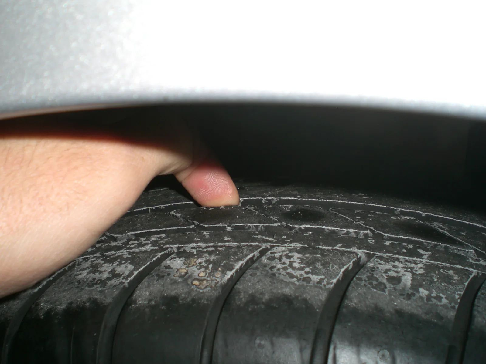
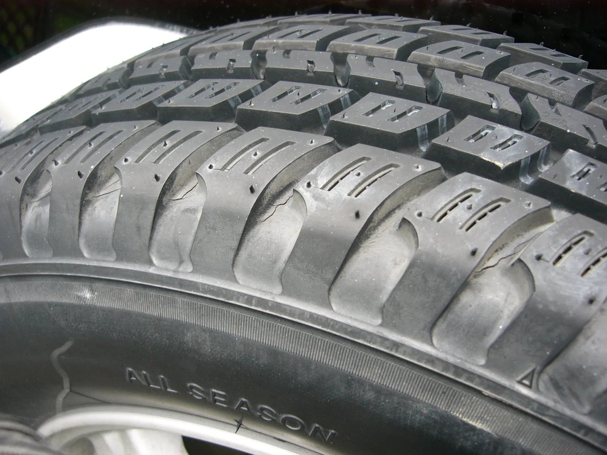
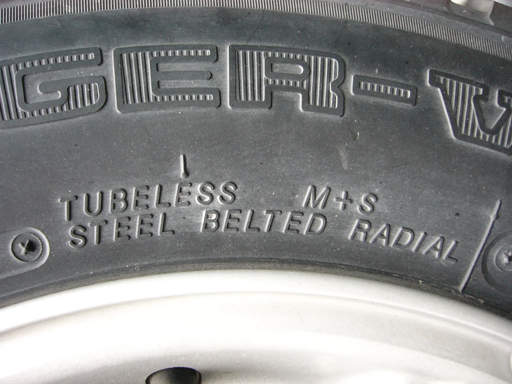

▲ 여름용 타이어 트레드. 단단한 컴파운드로 접지력과 제동 성능을 높인다 ⓒ Wikimedia Commons (CC BY-SA 2.0)
타이어 매장에서 "사계절 타이어면 다 되지 않나요?"라고 묻는 소비자가 많다. 틀린 말은 아니지만, '다 된다'는 것과 '가장 좋다'는 것은 다른 이야기다.
1. 컴파운드 — 단단함과 유연함의 트레이드오프

▲ 사계절 타이어 트레드와 규격 표기. 다양한 온도 조건에 대응하는 중간 특성의 고무가 사용된다 ⓒ Wikimedia Commons (CC BY-SA 3.0)
타이어 성능을 가르는 핵심은 고무 배합, 즉 컴파운드다. 여름용 타이어는 뻑뻑하고 점성이 강한 트레드 컴파운드를 써서 7°C 이상의 온도에서 최적의 접지력을 내도록 설계됐다. 반면 사계절 타이어는 더운 여름과 추운 겨울을 모두 아우르기 위해 중간 정도 특성의 컴파운드를 사용한다. 이 절충이 사계절 타이어의 존재 이유이자, 동시에 한계이기도 하다.
2. 영상 기온에서는 여름용이 앞선다

▲ 젖은 노면을 달리는 타이어. 미쉐린에 따르면 기온이 7°C 이상일 때는 여름용 타이어가 마른 노면과 젖은 노면 모두에서 사계절 타이어보다 제동거리가 짧다 ⓒ CarPrism
여름용 타이어는 넓은 접지 면적과 단단한 컴파운드 덕분에 영상 기온에서 핸들링과 제동 성능이 우수하다는 평가를 받는다. 스포츠 주행이나 장거리 고속 주행이 잦은 운전자라면 이 차이를 체감하기 쉽다. 사계절 타이어도 일상 주행에는 무리가 없지만, 한계 상황(급제동, 급코너링)에서의 성능은 전용 여름 타이어에 못 미친다.
3. 겨울엔 둘 다 정답이 아닐 수 있다

▲ 타이어 측면의 M+S(Mud+Snow) 표기. 사계절 타이어의 겨울철 대응 한계를 상징적으로 보여준다 ⓒ Wikimedia Commons (CC BY-SA 3.0)
여름용 타이어의 트레드 컴파운드는 낮은 기온에서 자연히 경직되기 때문에, 겨울 도로에서는 접지력이 급격히 떨어져 미끄러질 위험이 커진다. 사계절 타이어는 가벼운 눈길 정도는 대응이 가능하지만, 폭설이나 빙판길에서는 전용 겨울 타이어에 비해 성능이 크게 떨어진다. 즉 눈이 자주 오는 지역에 산다면, 사계절 타이어만 믿고 겨울을 나는 것은 위험 부담이 있다.
▲ 눈보라 속을 주행하는 차량들. 폭설·빙판길에서는 사계절 타이어도 전용 겨울 타이어의 접지력을 따라가지 못한다 ⓒ Wikimedia Commons (CC BY-SA 3.0)
4. 연비 — 회전저항이 만드는 차이

▲ 타이어 생산 공장 전경(자료사진). 컴파운드 배합은 생산 단계에서부터 용도별로 나뉜다 ⓒ CarPrism
연비 측면에서는 여름 타이어가 회전저항이 낮아 가장 유리하고, 사계절 타이어는 중간 수준의 연비를 보인다. 이는 컴파운드의 단단함과 관련이 있는데, 무른 고무일수록 구를 때 에너지 손실(회전저항)이 커지는 경향이 있다. 연비를 중요하게 여기는 운전자라면 계절별로 타이어를 교체하는 것이 장기적으로 연료비 절감에 도움이 될 수 있다.
5. 정리
체크포인트
- 여름용 타이어는 영상 기온에서 접지력·제동·연비 모두 우수하다.
- 사계절 타이어는 편의성이 강점이지만 극한 성능에서는 절충의 산물이다.
- 폭설·빙판이 잦은 지역이라면 사계절만으로는 부족할 수 있다.
- 주행 환경과 계절 편차를 따져 본인에게 맞는 타이어를 선택하는 것이 중요하다.